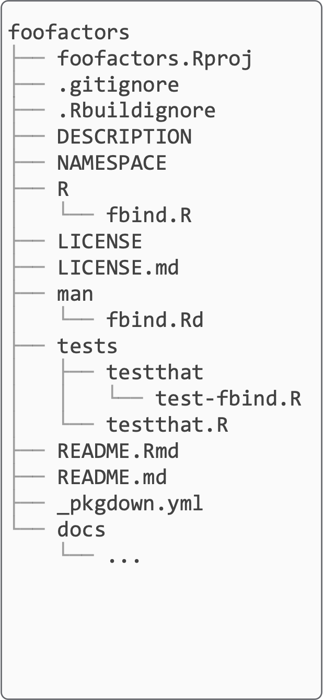
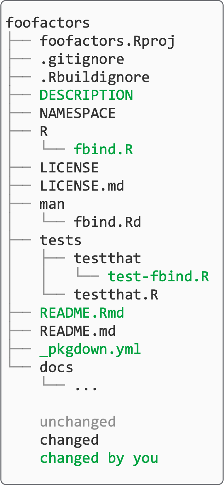
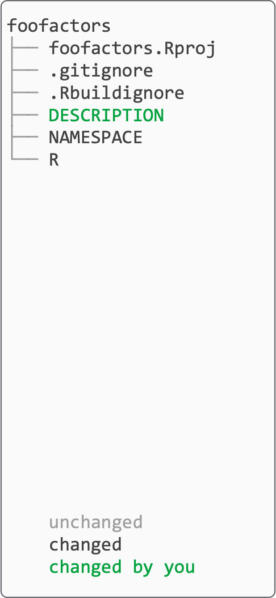
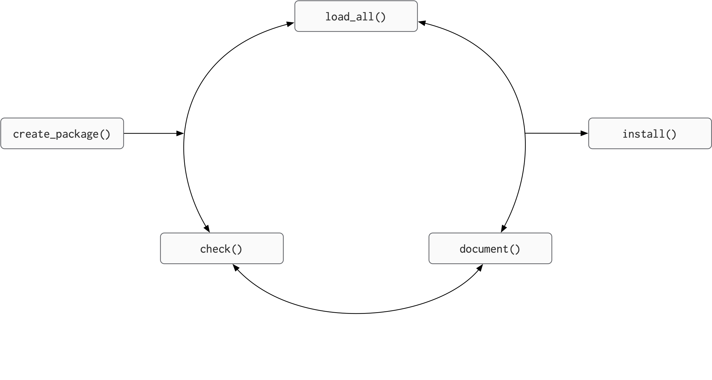
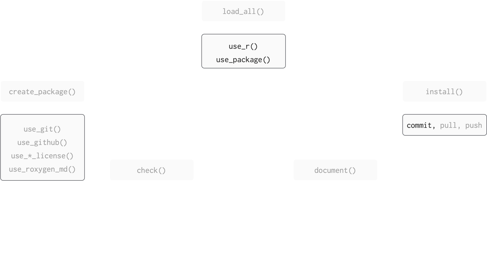
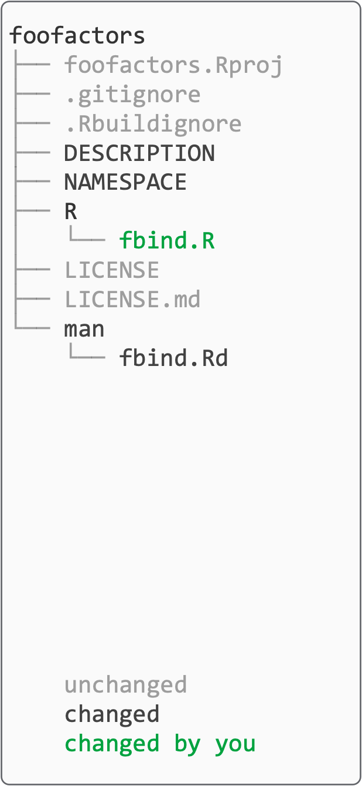

💻 🏦
Code You Can Bank On
Package development
Amelia McNamara
Motivation
In the R world, versions of this are attributed to Hadley Wickham:
Any time you copy-and-paste code three times, write a function.
Any time you copy-and-paste a function three times, write a package.
Also known as the rule of three: popularized by Martin Fowler (1999), attributed to Don Roberts
Why make a package?
Why make a package
- makes it easier to reuse functions you write
- have a consistent framework which encourages you to better organise, document and test, your code
- using this consistent framework means you can use many standardised tools
- is the easiest way to distribute code and data
Be nice to future you
In every project you have at least one other collaborator; future-you. You don’t want future-you to curse past-you
To avoid
Script vs package
Script
- one-off data analysis
- defined by
.Rextension library()calls- documentation in # comments
source()
Package
- defines reusable components
- defined by presence of
DESCRIPTIONfile - Required packages specified in
DESCRIPTION, made available inNAMESPACEfile - documentation in files and
Roxygencomments - Install and restart
Overview

(Does this remind you of anything?)
Figure adapted from Packages, by Hannah Frick
Overview
Figure adapted from Packages, by Hannah Frick

(Does this remind you of anything?)
Create package


Create package (your turn)
Be deliberate about where you create your package
Do not nest inside another RStudio project, R package or git repo.
That includes if you created an RStudio project for these materials!
My practice is to put all packages under my home directory, but your Documents folder is also okay (as long as that’s not synced by OneDrive or other file-tracking software!).
create_package()
What happens when we run create_package()?
R will create a folder called
BLTwhich is a package and an RStudio projectrestart R in the new project
create some infrastructure for your package
start the RStudio Build pane
create_package()
What happens when we run create_package()?
BLT.RprojDESCRIPTIONprovides metadata about your package.The
R/directory is where we will put.Rfiles with function definitions.NAMESPACEdeclares the functions your package exports and the functions your package imports from other packages.
create_package()
What happens when we run create_package()?
.Rbuildignorelists files that we need but that should not be included when building the R package from source..gitignoreanticipates Git usage and ignores some standard, behind-the-scenes files created by R and RStudio.
Create package (your turn)
create_package("../BLT") # set the path to suit you
# getwd() will remind you where you currently arecreates a minimal set of files for an installable package
opens a new RStudio project
Create framework

Make package a git repo (your turn)
creates a git repository in your (package) project
makes a first commit on your behalf
restarts RStudio
Make package a git repo (your turn)
you will get some messages sort of like this:
✔ Setting active project to "/Users/amcnamara2/BLT".
✔ Initialising Git repo.
✔ Adding ".Rhistory", ".RData", ".httr-oauth", ".DS_Store", and ".quarto" to .gitignore.
ℹ There are 5 uncommitted files:
• .gitignore
• .Rbuildignore
• BLT.Rproj
• DESCRIPTION
• NAMESPACE
! Is it ok to commit them?
1: No
2: Absolutely not
3: YupThe specific language and order of items will change over time, to make it harder to make mistakes!
Choose the option that means yes!
Create framework (we’re skipping this)
this is the closest you may see to actual magic:
creates GitHub repository
creates git remote
origin, sets to GitHub repositorypushes your
masterbranch to git remoteadds information to
DESCRIPTIONfileopens your repository page at GitHub
Develop


Develop (your turn)
There’s a usethis helper for adding .R files!
In real life, I like the idea of documenting, then writing functions:
claim what the function will do, then do it
if your explanation is getting heavy, split into more functions
For today, we’re going to push off documentation.
Start by writing a shell for the function:
Develop (your turn)
Write the function body
Develop (your turn)
☝️ Use this notation to be explicit about where R looks for the function Arima().
💾 Save AR1.R.
🤔 What happened?
Develop (your turn)
❯ checking DESCRIPTION meta-information ... WARNING
Non-standard license specification:
`use_mit_license()`, `use_gpl3_license()` or friends to pick a
license
Standardizable: FALSE
❯ checking dependencies in R code ... WARNING
'::' or ':::' import not declared from: ‘forecast’
❯ checking for future file timestamps ... NOTE
unable to verify current time
1 error ✖ | 2 warnings ✖ | 1 note ✖Develop (your turn)
We need to specify that our package will use the forecast package:
indicate a stronger reliance using
Imports(default)indicate a weaker reliance using
Suggests(test for package in functions)
Dependency management is a long-debated topic in the R community:
- for now, if you need to rely on a package, do it
Develop
Check
R CMD check is the gold standard for checking that an R package is in full working order.
It is a program that is executed in the shell.
However, devtools has the check() function to allow you to run this without leaving your R session.
🎬 Check your package:
Aside: in case of error
On running devtools::check() you may get an error if you are using a networked drive.
This is covered here and can be fixed.
Aside: in case of error
Save a copy of this file:
Save it somewhere other than the BLT directory
Open the file from the BLT project session
Run the whole file
You should now find that check() proceeds normally
Commit
Now would be a good time to commit your changes.
Jason Long, CC BY 3.0 <https://creativecommons.org/licenses/by/3.0>, via Wikimedia Commons
Experiment
Now that we’ve document()ed, load_all()ed and check()ed, we can try out our AR1() function in the console.
Develop (again)
Now that we’ve made one function in our package, let’s try making another. I’d like this function to find the percent of a time series that is missing.
There are lots of approaches to this, I wrote a wrapper for imputeTS::statsNA().
Some functions you may find useful as you work:
Develop (again)
Commit
Now would be a good time to commit your changes.
Jason Long, CC BY 3.0 <https://creativecommons.org/licenses/by/3.0>, via Wikimedia Commons
Develop (a third time)
Let’s take this up one more notch by making our function take the dataset and variable name as two separate arguments, so we could use it in a tidy pipeline.
Some functions you may find useful as you work:
Develop (a third time)
perc_missing_tidy <- function(dataset, variable){
var <- substitute(variable)
var_eval <- eval(var, envir = dataset)
na_stats <- imputeTS::statsNA(var_eval, print_only = FALSE)
tibble_perc <- tibble::tibble(perc = readr::parse_number(x = na_stats$percentage_NAs))
return(tibble_perc)
}This one gets tricky for a couple of reasons. One is non-standard evaluation.
Non-standard evaluation
If you’re masking specific tidyverse functions, you can get away with { } and passing arguments along with ....
But if we’re doing more general-purpose programming, we need to leverage non-standard evaluation in R.
| purpose | base | rlang | rlang (quosure) |
|---|---|---|---|
| capture unevaluated expression | quote() | expr() | quo() |
| substitute name for value | substitute() | enexpr() | enquo() |
| evaluate a captured expression | eval() | eval_tidy() | !! |
There are many more NSE functions, but I find these three concepts usually get me pretty far.
I’m not a big AI fan, but NSE is a nice use case for asking an LLM questions.
Develop (a third time)
Could we change my tidy percent missing function so it uses rlang syntax rather than base R?
Develop (a third time)
I believe enquo() would work in place of enexpr(), as well.
Commit
Now would be a good time to commit your changes.
Jason Long, CC BY 3.0 <https://creativecommons.org/licenses/by/3.0>, via Wikimedia Commons
Adding data to packages
Many packages come with example datasets bundled with them. There are many reasons for this, but the most salient is that if you include your own dataset you know it has exactly the features you need for examples and testing.
The most common location for package data is data/. We recommend that each file in this directory be an .rda file created by save() containing a single R object, with the same name as the file.
Of course, usethis has a helper function for this, usethis::use_data().
Adding data to packages (your turn)
Add the bacon data to the package,
✔ Adding R to Depends field in DESCRIPTION.
✔ Creating data/.
✔ Setting LazyData to "true" in DESCRIPTION.
✔ Saving "bacon" to "data/bacon.rda".
☐ Document your data (see <https://r-pkgs.org/data.html>).Commit
Now would be a good time to commit your changes.
Jason Long, CC BY 3.0 <https://creativecommons.org/licenses/by/3.0>, via Wikimedia Commons
Resources
- Happy git and GitHub for the useR, Jenny Bryan, the STAT 545 TAs, Jim Hester.
- What are quosures and when are they needed?, rlang documentation.
- R packages, Hadley Wickham and Jenny Bryan.
- Evaluating the Design of the R Language This is for my computer scientists who want the nitty-gritty about R as a language
- Advanced R
- Package states
- Object of type ‘closure’ is not subsettable, Jenny Bryan. rstudio::conf video, slides
- Code “smells” and feels, Jenny Bryan